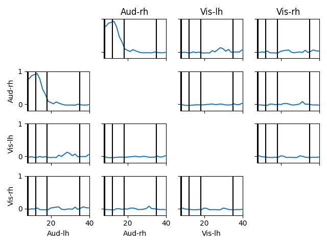

Note
Click here to download the full example code
Compute full spectrum source space connectivity between labels#
The connectivity is computed between 4 labels across the spectrum between 7.5 Hz and 40 Hz.
Reading inverse operator decomposition from /home/circleci/mne_data/MNE-sample-data/MEG/sample/sample_audvis-meg-oct-6-meg-inv.fif...
Reading inverse operator info...
[done]
Reading inverse operator decomposition...
[done]
305 x 305 full covariance (kind = 1) found.
Read a total of 4 projection items:
PCA-v1 (1 x 102) active
PCA-v2 (1 x 102) active
PCA-v3 (1 x 102) active
Average EEG reference (1 x 60) active
Noise covariance matrix read.
22494 x 22494 diagonal covariance (kind = 2) found.
Source covariance matrix read.
22494 x 22494 diagonal covariance (kind = 6) found.
Orientation priors read.
22494 x 22494 diagonal covariance (kind = 5) found.
Depth priors read.
Did not find the desired covariance matrix (kind = 3)
Reading a source space...
Computing patch statistics...
Patch information added...
Distance information added...
[done]
Reading a source space...
Computing patch statistics...
Patch information added...
Distance information added...
[done]
2 source spaces read
Read a total of 4 projection items:
PCA-v1 (1 x 102) active
PCA-v2 (1 x 102) active
PCA-v3 (1 x 102) active
Average EEG reference (1 x 60) active
Source spaces transformed to the inverse solution coordinate frame
Opening raw data file /home/circleci/mne_data/MNE-sample-data/MEG/sample/sample_audvis_filt-0-40_raw.fif...
Read a total of 4 projection items:
PCA-v1 (1 x 102) idle
PCA-v2 (1 x 102) idle
PCA-v3 (1 x 102) idle
Average EEG reference (1 x 60) idle
Range : 6450 ... 48149 = 42.956 ... 320.665 secs
Ready.
Not setting metadata
72 matching events found
Setting baseline interval to [-0.19979521315838786, 0.0] sec
Applying baseline correction (mode: mean)
Created an SSP operator (subspace dimension = 3)
4 projection items activated
Connectivity computation...
Preparing the inverse operator for use...
Scaled noise and source covariance from nave = 1 to nave = 1
Created the regularized inverter
Created an SSP operator (subspace dimension = 3)
Created the whitener using a noise covariance matrix with rank 302 (3 small eigenvalues omitted)
Computing noise-normalization factors (dSPM)...
[done]
Picked 305 channels from the data
Computing inverse...
Eigenleads need to be weighted ...
Processing epoch : 1 / 72 (at most)
Extracting time courses for 4 labels (mode: mean_flip)
only using indices for lower-triangular matrix
computing connectivity for 6 connections
using t=0.000s..0.699s for estimation (106 points)
frequencies: 8.5Hz..39.7Hz (23 points)
Using multitaper spectrum estimation with 7 DPSS windows
the following metrics will be computed: Debiased WPLI Square
computing connectivity for epoch 1
Processing epoch : 2 / 72 (at most)
Extracting time courses for 4 labels (mode: mean_flip)
computing connectivity for epoch 2
Processing epoch : 3 / 72 (at most)
Extracting time courses for 4 labels (mode: mean_flip)
computing connectivity for epoch 3
Processing epoch : 4 / 72 (at most)
Extracting time courses for 4 labels (mode: mean_flip)
computing connectivity for epoch 4
Processing epoch : 5 / 72 (at most)
Extracting time courses for 4 labels (mode: mean_flip)
computing connectivity for epoch 5
Processing epoch : 6 / 72 (at most)
Extracting time courses for 4 labels (mode: mean_flip)
computing connectivity for epoch 6
Processing epoch : 7 / 72 (at most)
Extracting time courses for 4 labels (mode: mean_flip)
computing connectivity for epoch 7
Processing epoch : 8 / 72 (at most)
Extracting time courses for 4 labels (mode: mean_flip)
computing connectivity for epoch 8
Processing epoch : 9 / 72 (at most)
Extracting time courses for 4 labels (mode: mean_flip)
computing connectivity for epoch 9
Processing epoch : 10 / 72 (at most)
Extracting time courses for 4 labels (mode: mean_flip)
computing connectivity for epoch 10
Rejecting epoch based on EOG : ['EOG 061']
Processing epoch : 11 / 72 (at most)
Extracting time courses for 4 labels (mode: mean_flip)
computing connectivity for epoch 11
Processing epoch : 12 / 72 (at most)
Extracting time courses for 4 labels (mode: mean_flip)
computing connectivity for epoch 12
Processing epoch : 13 / 72 (at most)
Extracting time courses for 4 labels (mode: mean_flip)
computing connectivity for epoch 13
Rejecting epoch based on EOG : ['EOG 061']
Rejecting epoch based on EOG : ['EOG 061']
Processing epoch : 14 / 72 (at most)
Extracting time courses for 4 labels (mode: mean_flip)
computing connectivity for epoch 14
Processing epoch : 15 / 72 (at most)
Extracting time courses for 4 labels (mode: mean_flip)
computing connectivity for epoch 15
Processing epoch : 16 / 72 (at most)
Extracting time courses for 4 labels (mode: mean_flip)
computing connectivity for epoch 16
Processing epoch : 17 / 72 (at most)
Extracting time courses for 4 labels (mode: mean_flip)
computing connectivity for epoch 17
Rejecting epoch based on EOG : ['EOG 061']
Processing epoch : 18 / 72 (at most)
Extracting time courses for 4 labels (mode: mean_flip)
computing connectivity for epoch 18
Processing epoch : 19 / 72 (at most)
Extracting time courses for 4 labels (mode: mean_flip)
computing connectivity for epoch 19
Processing epoch : 20 / 72 (at most)
Extracting time courses for 4 labels (mode: mean_flip)
computing connectivity for epoch 20
Rejecting epoch based on EOG : ['EOG 061']
Processing epoch : 21 / 72 (at most)
Extracting time courses for 4 labels (mode: mean_flip)
computing connectivity for epoch 21
Processing epoch : 22 / 72 (at most)
Extracting time courses for 4 labels (mode: mean_flip)
computing connectivity for epoch 22
Processing epoch : 23 / 72 (at most)
Extracting time courses for 4 labels (mode: mean_flip)
computing connectivity for epoch 23
Rejecting epoch based on MAG : ['MEG 1711']
Processing epoch : 24 / 72 (at most)
Extracting time courses for 4 labels (mode: mean_flip)
computing connectivity for epoch 24
Processing epoch : 25 / 72 (at most)
Extracting time courses for 4 labels (mode: mean_flip)
computing connectivity for epoch 25
Processing epoch : 26 / 72 (at most)
Extracting time courses for 4 labels (mode: mean_flip)
computing connectivity for epoch 26
Processing epoch : 27 / 72 (at most)
Extracting time courses for 4 labels (mode: mean_flip)
computing connectivity for epoch 27
Processing epoch : 28 / 72 (at most)
Extracting time courses for 4 labels (mode: mean_flip)
computing connectivity for epoch 28
Rejecting epoch based on EOG : ['EOG 061']
Processing epoch : 29 / 72 (at most)
Extracting time courses for 4 labels (mode: mean_flip)
computing connectivity for epoch 29
Processing epoch : 30 / 72 (at most)
Extracting time courses for 4 labels (mode: mean_flip)
computing connectivity for epoch 30
Processing epoch : 31 / 72 (at most)
Extracting time courses for 4 labels (mode: mean_flip)
computing connectivity for epoch 31
Rejecting epoch based on EOG : ['EOG 061']
Processing epoch : 32 / 72 (at most)
Extracting time courses for 4 labels (mode: mean_flip)
computing connectivity for epoch 32
Processing epoch : 33 / 72 (at most)
Extracting time courses for 4 labels (mode: mean_flip)
computing connectivity for epoch 33
Rejecting epoch based on EOG : ['EOG 061']
Processing epoch : 34 / 72 (at most)
Extracting time courses for 4 labels (mode: mean_flip)
computing connectivity for epoch 34
Processing epoch : 35 / 72 (at most)
Extracting time courses for 4 labels (mode: mean_flip)
computing connectivity for epoch 35
Rejecting epoch based on EOG : ['EOG 061']
Rejecting epoch based on EOG : ['EOG 061']
Processing epoch : 36 / 72 (at most)
Extracting time courses for 4 labels (mode: mean_flip)
computing connectivity for epoch 36
Rejecting epoch based on EOG : ['EOG 061']
Rejecting epoch based on EOG : ['EOG 061']
Processing epoch : 37 / 72 (at most)
Extracting time courses for 4 labels (mode: mean_flip)
computing connectivity for epoch 37
Processing epoch : 38 / 72 (at most)
Extracting time courses for 4 labels (mode: mean_flip)
computing connectivity for epoch 38
Processing epoch : 39 / 72 (at most)
Extracting time courses for 4 labels (mode: mean_flip)
computing connectivity for epoch 39
Processing epoch : 40 / 72 (at most)
Extracting time courses for 4 labels (mode: mean_flip)
computing connectivity for epoch 40
Processing epoch : 41 / 72 (at most)
Extracting time courses for 4 labels (mode: mean_flip)
computing connectivity for epoch 41
Processing epoch : 42 / 72 (at most)
Extracting time courses for 4 labels (mode: mean_flip)
computing connectivity for epoch 42
Processing epoch : 43 / 72 (at most)
Extracting time courses for 4 labels (mode: mean_flip)
computing connectivity for epoch 43
Processing epoch : 44 / 72 (at most)
Extracting time courses for 4 labels (mode: mean_flip)
computing connectivity for epoch 44
Rejecting epoch based on EOG : ['EOG 061']
Processing epoch : 45 / 72 (at most)
Extracting time courses for 4 labels (mode: mean_flip)
computing connectivity for epoch 45
Rejecting epoch based on EOG : ['EOG 061']
Processing epoch : 46 / 72 (at most)
Extracting time courses for 4 labels (mode: mean_flip)
computing connectivity for epoch 46
Processing epoch : 47 / 72 (at most)
Extracting time courses for 4 labels (mode: mean_flip)
computing connectivity for epoch 47
Processing epoch : 48 / 72 (at most)
Extracting time courses for 4 labels (mode: mean_flip)
computing connectivity for epoch 48
Rejecting epoch based on EOG : ['EOG 061']
Rejecting epoch based on EOG : ['EOG 061']
Processing epoch : 49 / 72 (at most)
Extracting time courses for 4 labels (mode: mean_flip)
computing connectivity for epoch 49
Processing epoch : 50 / 72 (at most)
Extracting time courses for 4 labels (mode: mean_flip)
computing connectivity for epoch 50
Processing epoch : 51 / 72 (at most)
Extracting time courses for 4 labels (mode: mean_flip)
computing connectivity for epoch 51
Processing epoch : 52 / 72 (at most)
Extracting time courses for 4 labels (mode: mean_flip)
computing connectivity for epoch 52
Processing epoch : 53 / 72 (at most)
Extracting time courses for 4 labels (mode: mean_flip)
computing connectivity for epoch 53
Processing epoch : 54 / 72 (at most)
Extracting time courses for 4 labels (mode: mean_flip)
computing connectivity for epoch 54
Processing epoch : 55 / 72 (at most)
Extracting time courses for 4 labels (mode: mean_flip)
computing connectivity for epoch 55
[done]
assembling connectivity matrix
[Connectivity computation done]
# Authors: Alexandre Gramfort <alexandre.gramfort@inria.fr>
#
# License: BSD (3-clause)
import matplotlib.pyplot as plt
import mne
from mne.datasets import sample
from mne.minimum_norm import apply_inverse_epochs, read_inverse_operator
from mne_connectivity import spectral_connectivity_epochs
print(__doc__)
data_path = sample.data_path()
subjects_dir = data_path / 'subjects'
fname_inv = data_path / 'MEG/sample/sample_audvis-meg-oct-6-meg-inv.fif'
fname_raw = data_path / 'MEG/sample/sample_audvis_filt-0-40_raw.fif'
fname_event = data_path / 'MEG/sample/sample_audvis_filt-0-40_raw-eve.fif'
# Load data
inverse_operator = read_inverse_operator(fname_inv)
raw = mne.io.read_raw_fif(fname_raw)
events = mne.read_events(fname_event)
# Add a bad channel
raw.info['bads'] += ['MEG 2443']
# Pick MEG channels
picks = mne.pick_types(raw.info, meg=True, eeg=False, stim=False, eog=True,
exclude='bads')
# Define epochs for left-auditory condition
event_id, tmin, tmax = 1, -0.2, 0.5
epochs = mne.Epochs(raw, events, event_id, tmin, tmax, picks=picks,
baseline=(None, 0), reject=dict(mag=4e-12, grad=4000e-13,
eog=150e-6))
# Compute inverse solution and for each epoch. By using "return_generator=True"
# stcs will be a generator object instead of a list.
snr = 1.0 # use lower SNR for single epochs
lambda2 = 1.0 / snr ** 2
method = "dSPM" # use dSPM method (could also be MNE or sLORETA)
stcs = apply_inverse_epochs(epochs, inverse_operator, lambda2, method,
pick_ori="normal", return_generator=True)
# Read some labels
names = ['Aud-lh', 'Aud-rh', 'Vis-lh', 'Vis-rh']
labels = [mne.read_label(data_path / f'MEG/sample/labels/{name}.label')
for name in names]
# Average the source estimates within each label using sign-flips to reduce
# signal cancellations, also here we return a generator
src = inverse_operator['src']
label_ts = mne.extract_label_time_course(stcs, labels, src, mode='mean_flip',
return_generator=True)
fmin, fmax = 7.5, 40.
sfreq = raw.info['sfreq'] # the sampling frequency
con = spectral_connectivity_epochs(
label_ts, method='wpli2_debiased', mode='multitaper', sfreq=sfreq,
fmin=fmin, fmax=fmax, mt_adaptive=True, n_jobs=1)
freqs = con.freqs
n_rows, n_cols = con.get_data(output='dense').shape[:2]
fig, axes = plt.subplots(n_rows, n_cols, sharex=True, sharey=True)
for i in range(n_rows):
for j in range(i + 1):
if i == j:
axes[i, j].set_axis_off()
continue
axes[i, j].plot(freqs, con.get_data(output='dense')[i, j, :])
axes[j, i].plot(freqs, con.get_data(output='dense')[i, j, :])
if j == 0:
axes[i, j].set_ylabel(names[i])
axes[0, i].set_title(names[i])
if i == (n_rows - 1):
axes[i, j].set_xlabel(names[j])
axes[i, j].set(xlim=[fmin, fmax], ylim=[-0.2, 1])
axes[j, i].set(xlim=[fmin, fmax], ylim=[-0.2, 1])
# Show band limits
for f in [8, 12, 18, 35]:
axes[i, j].axvline(f, color='k')
axes[j, i].axvline(f, color='k')
plt.tight_layout()
plt.show()
Total running time of the script: ( 0 minutes 1.900 seconds)